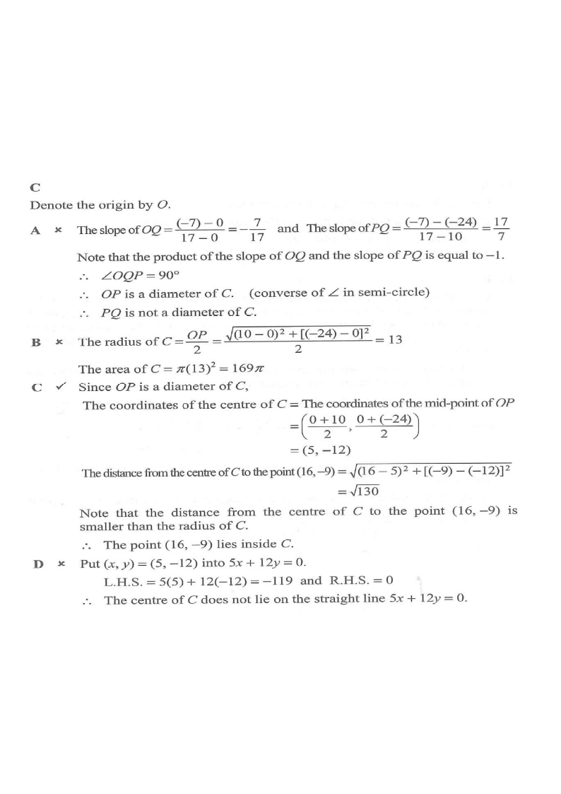

Topic 12 · Coordinate Geometry — Equations of Circles
The coordinates of the points $P$ and $Q$ are $(10,\,-24)$ and $(17,\,-7)$ respectively. Let $C$ be the circle which passes through the origin, $P$ and $Q$. Which of the following is true?

Let $O$ denote the origin. Compute the slopes:
$$m_{OQ}=\frac{-7-0}{17-0}=-\frac{7}{17},\qquad m_{PQ}=\frac{-7-(-24)}{17-10}=\frac{17}{7}$$The product of the slopes is
$$m_{OQ}\cdot m_{PQ}=-\frac{7}{17}\times\frac{17}{7}=-1$$Hence $OQ \perp PQ$, so $\angle OQP = 90^\circ$.
By the converse of the angle in a semi-circle, the side opposite the right angle, $OP$, must be a diameter of $C$.
✗ A: $PQ$ is not a diameter — $OP$ is. (The diameter is the side facing the right angle.)
Since $OP$ is a diameter:
$$OP=\sqrt{(10-0)^2+(-24-0)^2}=\sqrt{100+576}=\sqrt{676}=26$$So the radius is
$$r=\frac{OP}{2}=\frac{26}{2}=13$$and the area is
$$\text{Area of }C=\pi r^2=\pi(13)^2=169\pi$$✗ B: area is $169\pi$, not $196\pi$.
The centre of a circle is the mid-point of any diameter. Taking diameter $OP$:
$$\text{Centre}=\left(\frac{0+10}{2},\;\frac{0+(-24)}{2}\right)=(5,\,-12)$$So $C$ has centre $(5,-12)$ and radius $13$.
✗ D: put $(x,y)=(5,-12)$ into $5x+12y=0$:
$$\text{L.H.S.}=5(5)+12(-12)=25-144=-119\neq 0$$So the centre does not lie on $5x+12y=0$.
Distance from the centre $(5,-12)$ to the point $(16,-9)$:
$$d=\sqrt{(16-5)^2+(-9-(-12))^2}=\sqrt{11^2+3^2}=\sqrt{121+9}=\sqrt{130}$$Compare with the radius $r=13=\sqrt{169}$:
$$\sqrt{130}<\sqrt{169}=13 \quad\Longrightarrow\quad d✓ C is TRUE.